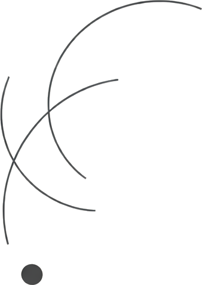

13 marzo 2026
Se la Costituzione serve a governare una nuova forma di potere, allora non siamo più soltanto nel campo dell’ingegneria del software.

La transizione dalla scienza alle tecnoscienze solleva questioni inedite. Cambia il modo in cui il sapere si organizza e incide sulle forme della decisione. Questo spazio osserva tali mutamenti a partire dai fatti, per comprenderne le implicazioni politiche e istituzionali.